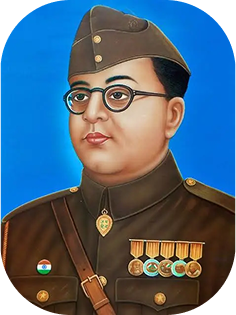

Subhas Chandra Bose, popularly known as Netaji, was a prominent Indian nationalist and freedom fighter born on January 23, 1897, in Cuttack, Odisha. Unlike leaders who favored non-violence, Bose advocated for armed resistance to achieve independence from British rule.He is best known for forming and leading the Indian National Army (INA), also called Azad Hind Fauj, which fought against British forces during World War II with support from Japan and Germany. His famous slogan, "Give me blood, and I will give you freedom," inspired millions of Indians to join the struggle for liberty. Bose died under mysterious circumstances in a plane crash in Taiwan on August 18, 1945.